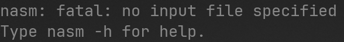

Para prosseguirmos o tutorial, sera necessario configurar o ambiente de desenvolvimento Assembly. Para isso precisaremos utilizar um Assembler e um editor de codigo de sua preferencia, como o Visual Studio Code, Notepad++, etc...
Existem diversos assemblers conhecidos, como:
No entanto, durante o tutorial, iremos utilizar NASM, isso pois eh portatil e pode ser usado em Windows, Linux, MacOS e DOS.
1 - Verifique qual e a arquitetura do seu processador. Para isso recomendo o seguinte tutorial.
2 - Baixe o NASM de acordo com a arquitetura do seu PC
3 - Deixe o NASM no path do windows. Caso nao saiba como, veja esse tutorial.
4 - Teste se funcionou. Para isso, abra/reinicie o prompt de comando e digite nasm. Isso deve acontecer:
O passo a passo depende da distro em que voce esta usando. Para ubuntu voce pode usar:
sudo apt install nasmPara macOS, veja esse tutorial
Para DOS, veja esse tutorial